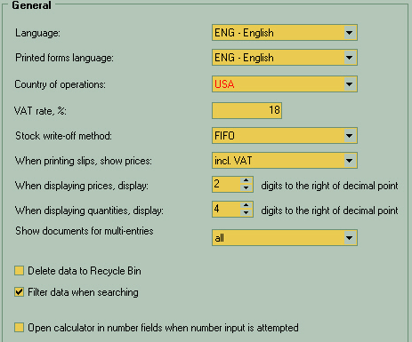

| • | Language - change interface language here. It can be different for each user. |
| • | Printed forms language - Language used for document and table standard headers, etc. May vary from user to user. |
| • | Country of operations - Sets all at once the financial rules that will be applied for document processing. This is system-wide variable, set at the installation time and protected from changes from there. Even if your distribution does not apply protection on this item do not change it until you're absolutely sure what does it mean. |
| • | VAT rate - if Value Added Tax is applicable in your area then set it here.
The value is in percents as usual. |
| • | Stock write-off method:
FIFO - First In, First Out - the earlier arrivals to your warehouse will be allowed to be sold first. Fresh food is the good example.
LIFO - opposite case: Last In, First Out. Used to ensure the newest items to be sold first. Mind Hi-tech and gadgets. |
| • | When printing slips... - add VAT or not in printed documents |
| • | When displaying prices/quantities - how much of precision you want to preserve in displaying the fractional numbers |
| • | Show documents for multi-entries - if you have documents for multiple businesses in single database then you may prefer to see only ones that belongs to currently selected enterprise or just the all of them at once |
| • | Delete data to recycle bin - allows the deleted documents to be restored later until Recycle Bin is emptied. |
| • | Filter data when searching - quick filters applied when performing the global search. |
| • | Open calculator... - Each numeric field such as quantity or price can pop-up the simple calculator for your help. |
|
|